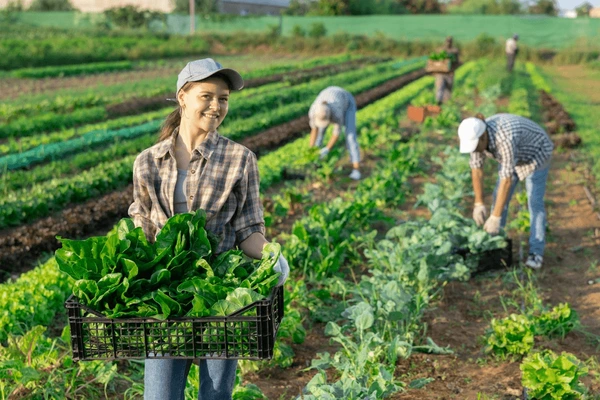
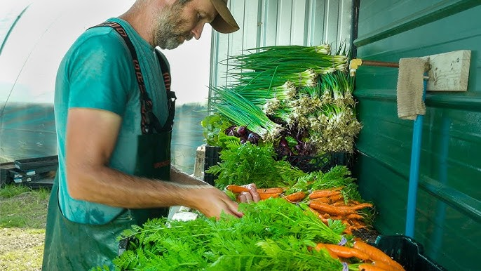
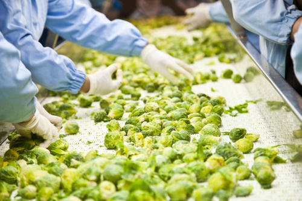
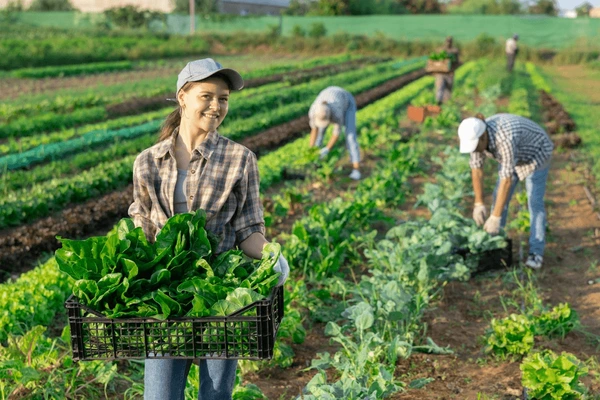
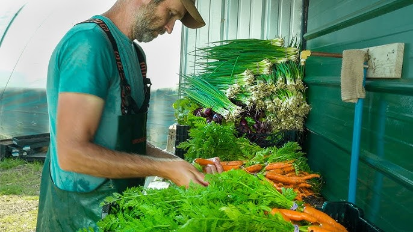
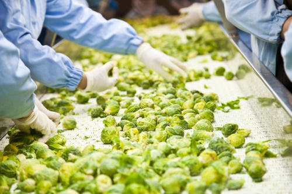
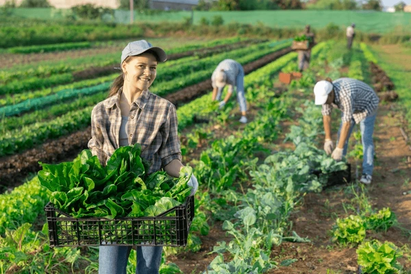
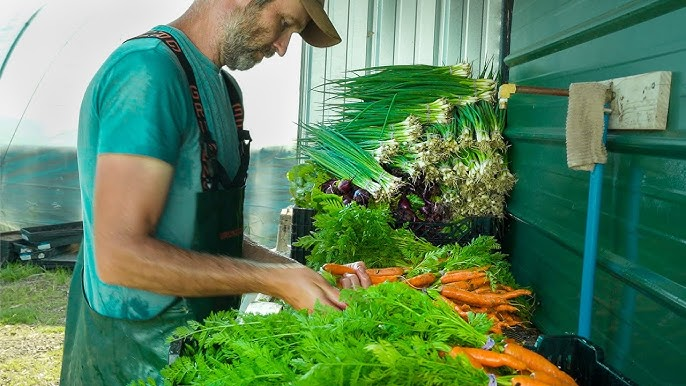
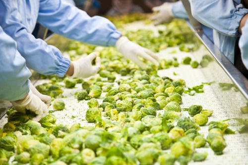

Welcome to AgriLinks
Bridging Farmers and Markets with Technology!
 





Bridging Farmers and Markets with Technology!



AgriLinks is dedicated to empowering farmers, streamlining crop management, and ensuring better market access. Our platform provides end-to-end solutions from harvest tracking, grading, shipping, to final delivery. Join us in revolutionizing the agricultural supply chain for a sustainable future!